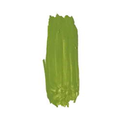
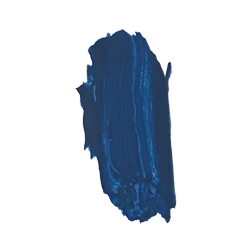

<DOCTYPE! html>
<html>
<head>
  <title>Filbert Brush</title>
  <style>
@import url('https://fonts.googleapis.com/css?family=Raleway:400,700');
</style>
  <meta name="viewport" content="width=device-width, initial-scale=1">
  <link rel="stylesheet" href="css5/style.css">
  <script src="https://code.jquery.com/jquery-1.12.4.js"></script>
  <script src="https://code.jquery.com/ui/1.12.1/jquery-ui.js"></script>
    <script src="js/script.js"></script>

    <div class="firstlink"> <div id="brush">
<p> <a href="index.html">Filbert</a></p>
</div>

<a class="brushstroke1">

<span class="showdisplayonhover">
Filbert Brush:
<span class="showbodyofdisplayonhover">
Is good for blending, soft rounded edges like flower petals. this brush is sort of a combination of the rounds (because they can be used for detail) and flat (because they can cover more space than round).
</span>
</span>
</a>

 <div class="brushstroke2">
 
 </div>

<div class="brushstroke3">
 
 </div>

<div class="brushstroke4">
 
 </div>

<div class="brushstroke5">
 
 </div>

<div class="brushstroke6">
 
 </div>

<div class="brushstroke7">
 
 </div>

 <div class="painting">
 
 </div>

 </html>